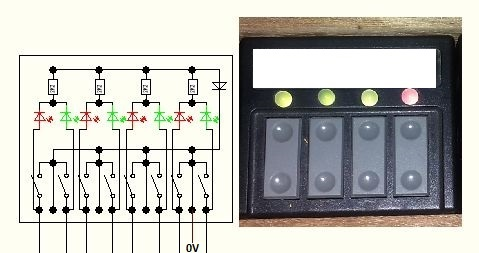
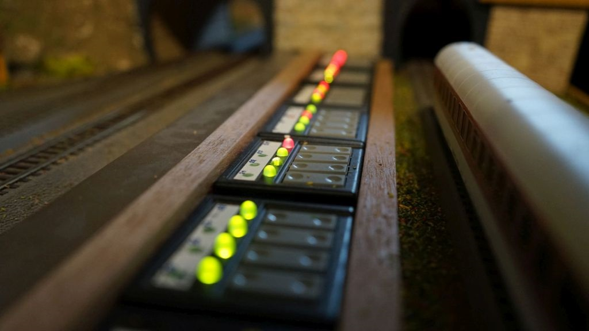
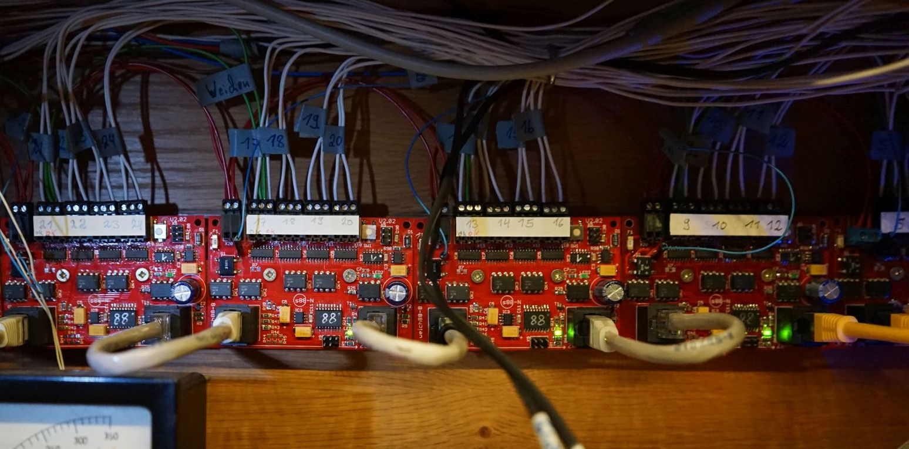
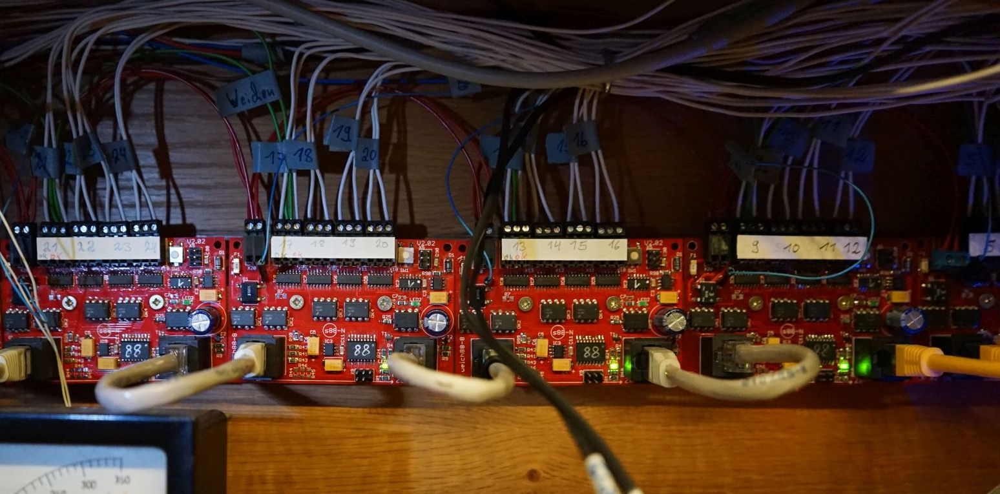
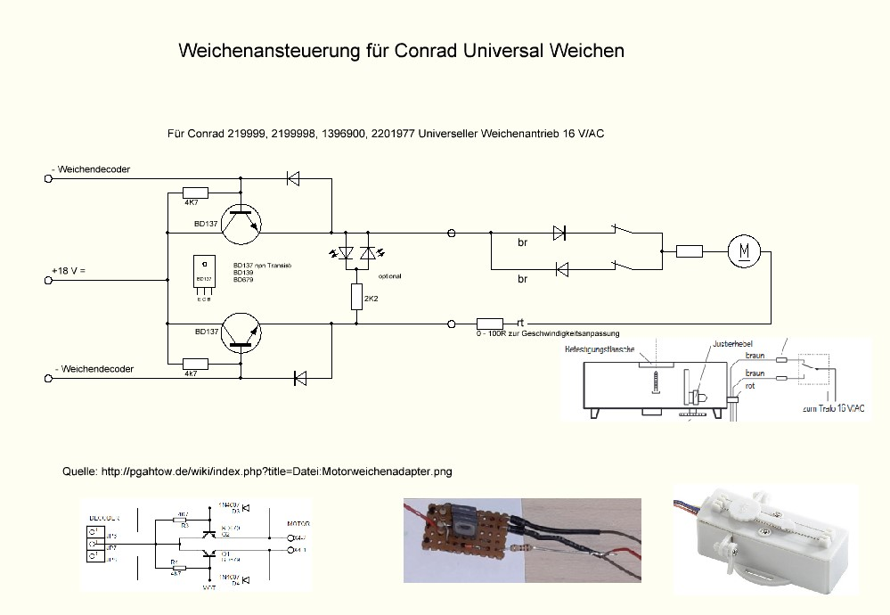
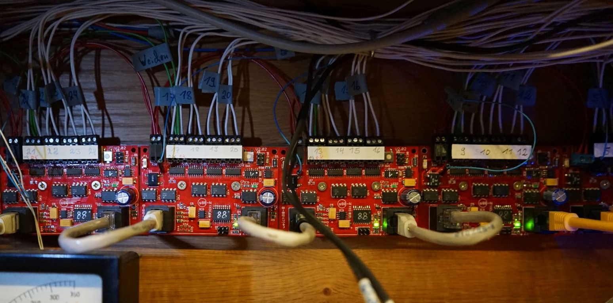
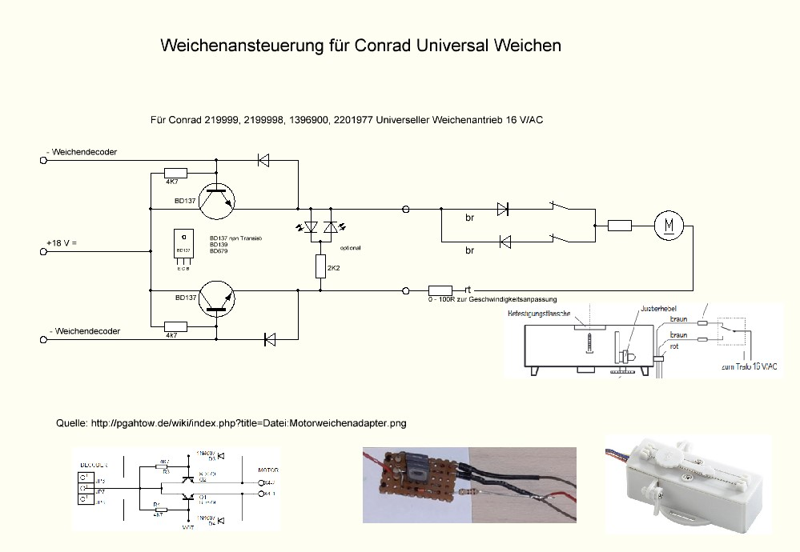

Weichen Steuerung
Weichensteuerung mit Taster
Meine "alte" Weichensteuerung mit Taster und Weichenstatus Duo-LED Anzeige, grün Weiche gerade, rot abbiegen. Voraussetzung es werden Weichen mit Endabschaltung verwendet, eine Übersicht über Weichenantriebe:
Weichenantriebe
(externer Link)
Die Duo-LED's habe ich in die Weichentastern nachgerüstet, als LED Vorwiederstand wurde je ein 2,2K SMD verwendet.


Erweiterung Weichensteuerung um Weich88N
Nachrüstung mit der Weichen Steuerung von:
www.digital-bahn.de - Weich88-N
(externer Link)
dadurch ist eine Steuerung der Weichen und die Rückmeldung des echten Weichenstatus über den s88-N Bus vom/zum PC aus möglich.
 

Test: Universal Weichenantrieb
Um den Conrad Universal Weichenantrieb verwenden zu können ist eine kleine Weichenansteuerungs Schaltung notwendig.
Info Quelle für diese Schaltung:
Motorweichenadapter
(externer Link)

Fazit: nicht mein Favorit, keine Weichenstellungsrückmeldung, hackt immer wieder mal, dann muss mit Hand angestoßen werden, unzuverlässig.
dadurch ist eine Steuerung der Weichen und die Rückmeldung des echten Weichenstatus über den s88-N Bus vom/zum PC aus möglich.

Test: Universal Weichenantrieb
Um den Conrad Universal Weichenantrieb verwenden zu können ist eine kleine Weichenansteuerungs Schaltung notwendig.
Info Quelle für diese Schaltung:
Motorweichenadapter
(externer Link)

Fazit: nicht mein Favorit, keine Weichenstellungsrückmeldung, hackt immer wieder mal, dann muss mit Hand angestoßen werden, unzuverlässig.
- JoFri
- Stand: 06.2020